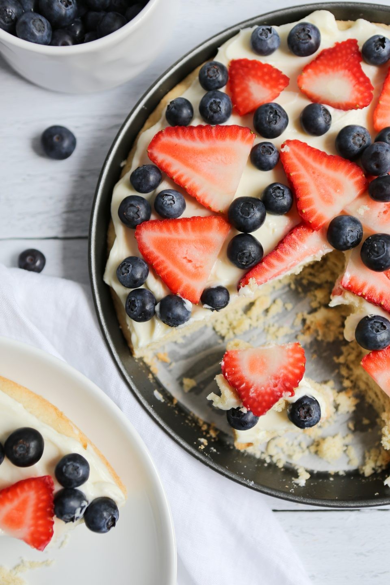

Gluten Free Fruit Pizza
Gluten-Free Fruit Pizza

Gluten-Free Fruit Pizza Recipe
Ingredients
For the Cookie Crust
- ▢ ½ Cup (1 Stick) Butter - Softened
- ▢ ½ Cup Granulated Sugar
- ▢ 1 Egg
- ▢ 1 Teaspoon Vanilla Extract
- ▢ ½ Teaspoon Almond Extract
- ▢ 1 ¼ Cup Gluten-Free Flour Blend - Like a Bob's Red Mill 1-to-1 Blend or Cup4Cup
- ▢ 1 Teaspoon Baking Powder
- ▢ ¼ Teaspoon Salt
For The Cream Cheese Frosting
- ▢ 1 8 oz. Block Cream Cheese - Softened
- ▢ ½ Cup Powdered Sugar
- ▢ 1 Tablespoon Fresh Squeezed Lemon Juice
Extras
- ▢ 1½ – 2 Cups Variety of Fresh Fruit for The Top - Like strawberries, blueberries, sliced grapes, kiwi,
mango, bananas, mandarin oranges, etc.
Instructions
- Preheat oven to 350° Fahrenheit.
- In a mixing bowl, cream together the butter and granulated sugar. You want it to be light and fluffy
- Add in the egg, vanilla extract, and almond extract. Mix until well-combined.
- In a separate bowl, whisk together the gluten-free flour blend, baking powder, and salt. Slowly add this
dry mixture to the wet ingredients. Mix until it's all fully incorporated and smooth.
- Layer a baking sheet with parchment paper. Evenly press the cookie dough into the bottom of the baking
pan getting it all the way to the edges.
- Bake the cookie for 12-15 minutes until it just starts to get very light golden brown around the edges.
Cool completely before adding the frosting and fruit.
- While the cookie is baking, prepare your cream cheese frosting. In a mixing bowl, cream together the
softened cream cheese and powdered sugar. Mix for about 1 minute, then scrape down the sides of the
bowl, and mix again. Add in the lemon juice and mix for about another minute until everything is light,
fluffy, and really creamy.
- After the cookie has completely cooled, spread the cream cheese frosting evenly over the cookie base.
Then layer with your favorite fresh fruit combinations. Cut into triangles or squares and serve!
Notes
*You can make this ahead of time, but I suggest waiting to add the cream cheese frosting and fruit until you
are ready to serve it.
*If you have leftovers, store them in an airtight container in the refrigerator. This should be good for a
few days in the fridge.